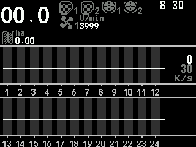
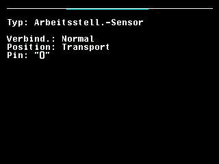

System nach dem Einbau prüfen
Die Prüfungen, die Sie nach der Montage eines Hectare Mini einmal durchführen – jeder Kornsensor in seiner eigenen Reihe, Zählung, Arbeitsstellung, Geschwindigkeit und die übrigen Sensoren – mit dem, was der Bildschirm bei jedem Schritt zeigen muss, und wohin Sie gehen, wenn er es nicht tut.
Führen Sie diese Prüfungen einmal durch, wenn das System montiert ist und bevor Sie auf das erste Feld fahren. Jeder Schritt sagt, was Sie tun, und was der Bildschirm zeigen muss. Besteht ein Schritt nicht, sagt Ihnen die letzte Spalte der Tabelle am Ende, wohin Sie gehen. Überspringen Sie keinen Schritt, nur weil der vorige in Ordnung war.
Sie brauchen einige Körner der Kultur und einen Helfer. Alle Prüfungen laufen auf der Ebene „Fahrer“, auf der das Panel seine Alarmfenster zeigt.
1. Das Profil und die Verbindungen
Machen Sie die drei Prüfungen aus Profil und Verbindungen prüfen. Bestanden heißt: Die Profilliste passt zur Maschine, nach einigen Sekunden auf dem Startbildschirm erscheint kein Fenster „Verbindung weg“, und keine Anzeige zeigt ein rotes Kreuz oder das Zeichen für nicht überwacht. Der Startbildschirm sieht dann so aus:

Machen Sie erst weiter, wenn das so ist.
2. Jeder Kornsensor sitzt in seiner eigenen Reihe
Jeder Kornsensor muss unter der Nummer seiner eigenen Reihe stehen. Prüfen Sie es Reihe für Reihe:
Schalten Sie das Panel ein und drücken Sie „HOME“. Die Saattabelle öffnet sich. Drücken Sie „PLUS“, bis die Tabelle Kornzähler angezeigt wird, mit einer Zeile je Saatleitung. Lesen Sie die Zahl auf dieser Tabelle ab, die die Anzahl der Körner zeigt – nicht auf der Ansicht mit Körnern je Meter: Diese zeigt nur Werte, solange sich die Maschine bewegt.

Die Tabelle Kornzähler. Drücken Sie „MENU“ und „PLUS“ für „Ja“, um die Werte zurückzusetzen – Werte der Saattabelle zurücksetzen.
Lassen Sie einige Körner von Hand durch das Saatrohr von Reihe 1 fallen. Statt Körnern können Sie auch einen beliebigen kleinen Gegenstand, zum Beispiel einen langen Kabelbinder, mehrmals durch das Saatrohr führen – jeder Durchgang wird gezählt. Beobachten Sie die Tabelle: Die Werte von Reihe 1 müssen sich ändern.
Machen Sie dasselbe mit Reihe 2, dann nacheinander mit jeder weiteren Reihe. Sehen Sie nach jeder Reihe nach, welche Zeile der Tabelle reagiert hat.
Notieren Sie jede Reihe, bei der eine andere Reihe reagiert hat oder keine.
Ein Sensor, der in einer anderen Reihe reagiert, ist in der falschen Reihenfolge angeschlossen. Bei einer Reihe, die gar nicht reagiert, müssen Sie ihren Sensor prüfen.
Stimmt die Reihenfolge nicht, geben Sie dem Sensor die Nummer seiner Reihe – Kornsensor konfigurieren. Bleibt eine Reihe stumm, öffnen Sie den Statusbildschirm ihres Sensors (Schritt 7 zeigt, wie): Status: muss „Betrieb“ lauten. Bei jedem anderen Zustand siehe Zustand des Kornsensors; bei einem Sensor, der nicht antwortet, siehe Gerät antwortet nicht.
3. Zählung
Setzen Sie die Werte zurück wie in Schritt 2 der vorigen Prüfung.
Zählen Sie eine bekannte Anzahl Körner ab, zum Beispiel 20, und lassen Sie sie durch das Saatrohr einer Reihe fallen.
Lesen Sie den Wert dieser Reihe in der Tabelle Kornzähler ab. Bei einer Einzelkornsämaschine stimmt er bis auf ein Korn mit der Zahl überein, die Sie fallen ließen, sofern die „Fraktion“ der Kornsensoren auf die Größe des Korns eingestellt ist.
Ist der Wert deutlich höher – bis zum Doppelten der Zahl –, ist die Fraktion für dieses Korn zu klein eingestellt: Ein großes Korn, zum Beispiel Mais, wird dann als zwei gezählt. Stellen Sie die Fraktion nach der Tabelle in Korn- und Düngersensoren ein.
4. Der Arbeitsstellungssensor
Überspringen Sie diesen Schritt, wenn das Profil keinen Arbeitsstellungssensor hat.
Senken Sie die Maschine in die Arbeitsstellung ab. Der Statusbildschirm des Arbeitsstellungssensors muss „Position: Arbeit“ zeigen.
Heben Sie die Maschine in die Transportstellung an. Der Statusbildschirm muss „Position: Transport“ zeigen, und auf dem Startbildschirm blinkt die Geräteanzeige gelb.
Senken und heben Sie sie noch einmal. Der Zustand muss jedes Mal folgen.

Ist der Zustand vertauscht oder ändert er sich nicht, siehe Behälter- und Arbeitsstellungssensoren: Der Parameter „Signal Transportstellung“ muss dem entsprechen, was der Sensor bei angehobener Maschine liefert.
5. Geschwindigkeit
Fahren Sie die Maschine langsam in der Arbeitsstellung.
Die Geschwindigkeitsanzeige auf dem Startbildschirm muss eine Geschwindigkeit zeigen, nicht null und kein rotes Kreuz.
Vergleichen Sie sie mit dem Tachometer des Traktors oder einem GPS-Navigationsgerät, wie in der Kurzanleitung.
Wird keine Geschwindigkeit angezeigt, siehe Fahrgeschwindigkeit: Alarme des Geschwindigkeitssensors. Weicht die Geschwindigkeit um einen gleichbleibenden Anteil ab, kalibrieren Sie den Sensor – Geschwindigkeitssensor kalibrieren.
6. Die übrigen Sensoren des Profils
Prüfen Sie nur die Sensoren, die Ihr Profil aufführt. Öffnen Sie bei jedem seinen Statusbildschirm wie in Schritt 7 und sehen Sie auf die Zeile „Verbind.:“: Sie muss „Normal“ lauten.
| Sensor | Was Sie tun | Was der Bildschirm zeigen muss | Wenn nicht |
|---|---|---|---|
| Gebläse | Starten Sie das Gebläse. | Auf dem Startbildschirm eine Gebläsedrehzahl in rpm, nicht rot. Auf dem Statusbildschirm F= in Hz. | Gebläse und Dosierwelle: Drehzahlalarme |
| Druck | Starten Sie das Gebläse. | P= in kPa auf dem Statusbildschirm, kein Alarmfenster. | Druckalarme |
| Behälter | Sehen Sie bei Produkt im Behälter auf den Statusbildschirm. | Pin: zeigt "0", solange Produkt den Sensor bedeckt. | Behälter leer |
| Dosierwelle | Öffnen Sie den Statusbildschirm. | F= in Hz und kein Alarmfenster „Kein Lauf“, solange die Maschine sät oder fährt. | Gebläse und Dosierwelle: Drehzahlalarme |
7. Das Ergebnis festhalten
Schreiben Sie auf oder fotografieren Sie, was Sie brauchen, wenn Sie später um Hilfe bitten müssen:
Die Firmware-Version. Drücken Sie auf dem Startbildschirm „MENU“ und wählen Sie den letzten Punkt des Hauptmenüs. Das Fenster zeigt die Version der Software, die Seriennummer des Panels und seine Hardwarekennung. „BACK“ schließt es.
Das Datum der Prüfung.
Ein Foto des Sensor-Statusbildschirms jedes Sensors, der Ärger gemacht hat, und eines Sensors, der funktioniert. So kommen Sie hin: Halten Sie auf dem Startbildschirm „MENU“ gedrückt, bis die Geschwindigkeitsanzeige einen weißen Hintergrund hat, wählen Sie den Sensor mit „UP“ / „DOWN“, drücken Sie „MENU“, wählen Sie dann „Information“ und drücken Sie „MENU“. „BACK“ verlässt ihn – Der Sensor-Statusbildschirm.
Wenn ein Schritt nicht besteht
| Schritt | Weiter mit |
|---|---|
| 1. Profil und Verbindungen | Profil einrichten, Gerät antwortet nicht |
| 2. Sensor in der falschen Reihe | Kornsensor konfigurieren |
| 2. Eine Reihe reagiert nicht | Zustand des Kornsensors, Gerät antwortet nicht |
| 3. Zählung | Korn- und Düngersensoren |
| 4. Arbeitsstellung | Behälter- und Arbeitsstellungssensoren |
| 5. Geschwindigkeit | Alarme des Geschwindigkeitssensors, Geschwindigkeitssensor kalibrieren |
| 6. Gebläse, Dosierwelle | Gebläse und Dosierwelle: Drehzahlalarme |
| 6. Druck | Druckalarme |
| 6. Behälter | Behälter leer |
| Weiter unklar | Bevor Sie den Support kontaktieren |
Ihre Maschine tut etwas, das diese Seite nicht beantwortet? Schreiben Sie an support@agriwelt.com — es antwortet ein Ingenieur.